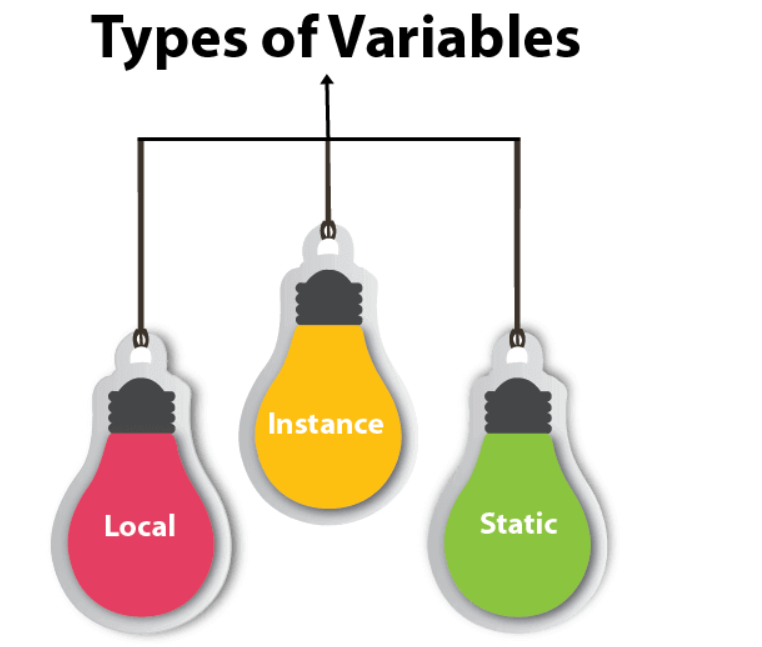
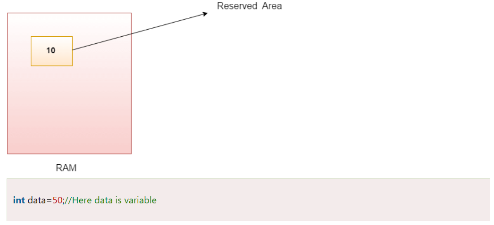
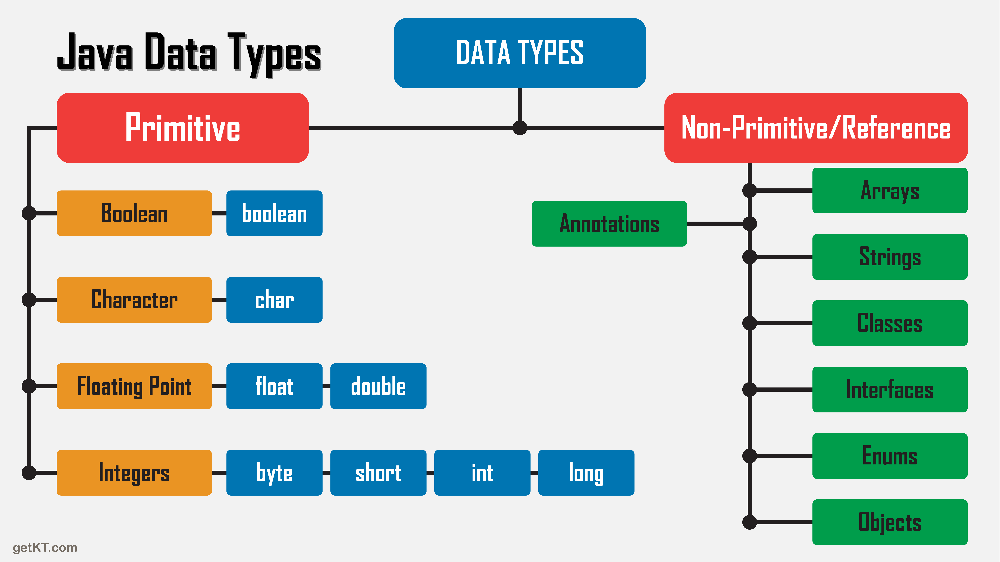
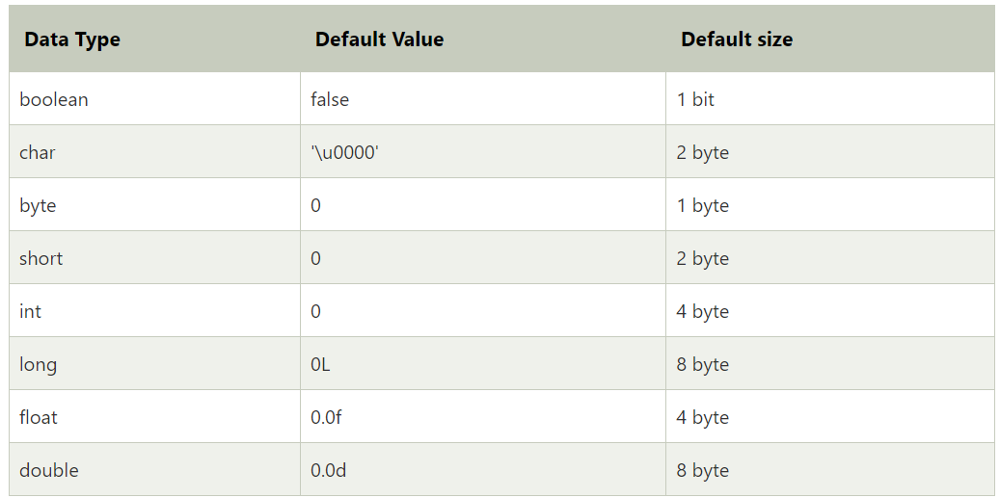
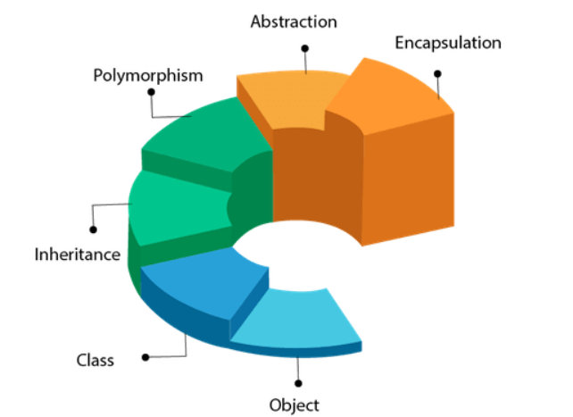
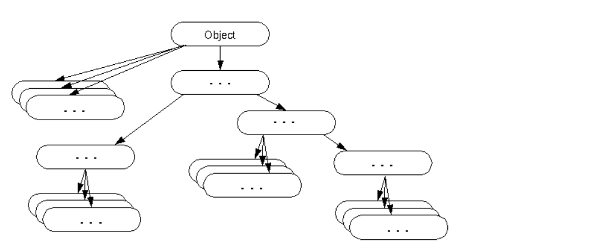

Features of Java
JAVA
Our core Java programming tutorial is designed for students and working professionals.
Java is an object-oriented, class-based, concurrent, secured and general-purpose computer-programming language.

What is Java?
Java is a programming language and a platform. Java is a high level, robust, object-oriented and secure programming language.
Java was developed by Sun Microsystems (which is now the subsidiary of Oracle) in the year 1995.
James Gosling is known as the father of Java. Before Java, its name was Oak. Since Oak was already
a registered company, so James Gosling and his team changed the name from Oak to Java.
Platform:
Any hardware or software environment in which a program runs, is known as a platform.
Since Java has a runtime environment (JRE) and API, it is called a platform.
Java Variables
A variable is a container which holds the value while the Java program is executed.
A variable is assigned with a data type.
Variable is a name of memory location. There are three types of variables in java: local, instance and static.
There are two types of data types in Java: primitive and non-primitive.
Variable
A variable is the name of a reserved area allocated in memory. In other words, it is a name of
the memory location. It is a combination of "vary + able" which means its value can be changed.

Types of Variables
There are three types of variables in Java:
1)local variable
2)instance variable
3)static variable

1) Local Variable
A variable declared inside the body of the method is called local variable.
You can use this variable only within that method and the other methods in the class aren't even aware that
the variable exists.
A local variable cannot be defined with "static" keyword.
2) Instance Variable
A variable declared inside the class but outside the body of the method, is called an instance variable.
It is not declared as static.
It is called an instance variable because its value is instance-specific and is not shared among instances.
3) Static variable
A variable that is declared as static is called a static variable. It cannot be local. You can create a single
copy of the static variable and share it among all the instances of the class. Memory allocation for static
variables happens only once when the class is loaded in the memory.
Data Types in Java
Data types specify the different sizes and values that can be stored in the variable. There are two
types of data types in Java:

1. Primitive data types: The primitive data types include boolean, char, byte, short, int, long, float and double.
2. Non-primitive data types: The non-primitive data types include Classes, Interfaces, and Arrays.
Java Primitive Data Types
In Java language, primitive data types are the building blocks of data manipulation. These are the
most basic data types available in Java language.
There are 8 types of primitive data types:
1. boolean data type
2. byte data type
3. char data type
4. short data type
5. int data type
6. long data type
7. float data type
8. double data type

Object class in Java
The Object class is the parent class of all the classes in java by default. In other words, it is
the topmost class of java.
The Object class is beneficial if you want to refer any object whose type you don't know. Notice
that parent class reference variable can refer the child class object, know as upcasting.
Let's take an example, there is getObject() method that returns an object but it can be of any type
like Employee,Student etc, we can use Object class reference to refer that object. For example:
Object obj=getObject();//we don't know what object will be returned from this method
The Object class provides some common behaviors to all the objects such as object can be compared, object
can be cloned, object can be notified etc.

Object-Oriented Programming System
Object means a real-world entity such as a pen, chair, table, computer, watch, etc. Object-Oriented
Programming is a methodology or paradigm to design a program using classes and objects. It simplifies
software development and maintenance by providing some concepts:
1. Object
2. Class
3. Inheritance
4. Polymorphism
5. Abstraction
6. Encapsulation
Apart from these concepts, there are some other terms which are used in Object-Oriented design:
1. Coupling
2. Cohesion
3. Association
4. Aggregation
5. Composition
